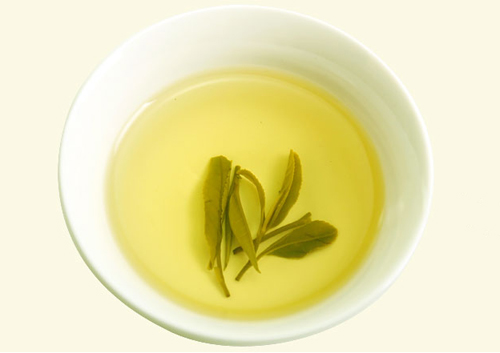
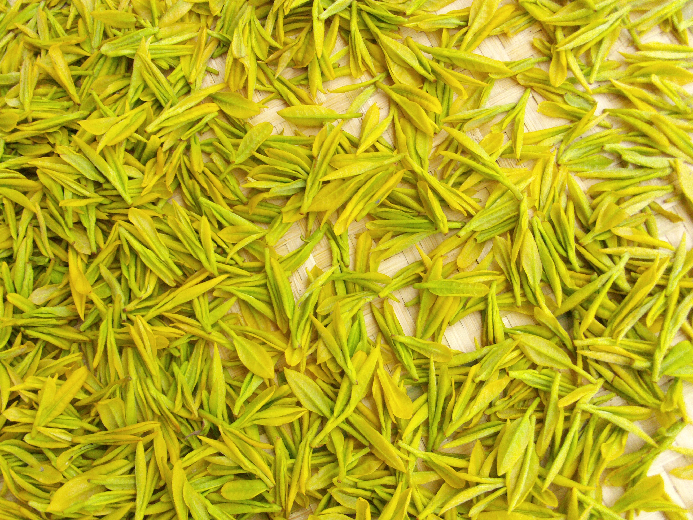

黄茶及其特性
按茶色不同来分类——黄茶：

黄茶的品质特点是“黄叶黄汤”。这种黄色是制茶过程中进行闷堆渥黄的结果。黄茶分为黄芽茶、黄小茶和黄大茶三类。黄茶芽叶细嫩，显毫，香味鲜醇。由于品种的不同，在茶片选择、加工工艺上有相当大的区别．比如，湖南省岳阳洞庭湖君山的“君山银针”茶，采用的全是肥壮的芽头，制茶工艺精细，分杀青、摊放、初烘、复摊、初包、复烘、再摊放、复包、干燥、分级等十道工序。加工后的“君山银针”茶外表披毛，色泽金黄光亮。
黄茶具有“黄叶黄汤”的特色，属于轻发酵茶。这种黄色主要是制茶过程中进行渥堆闷黄的结果。黄茶可分为黄大茶、黄小茶和黄芽茶三类。
黄大茶：著名的品种有安徽的霍山黄大茶、广东的大叶青等。
黄小茶：著名的品种有湖南宁乡的沩山毛尖、湖南岳阳的北港毛尖、湖北的远安鹿苑、浙江的平阳黄汤等。
黄芽茶：著名的品种有湖南岳阳的君山银针、四川名山的蒙顶黄芽、安徽霍山的霍山黄芽、浙江德清的莫干黄芽等。

各类黄茶名：君山银针；蒙顶黄芽；北港毛尖；鹿苑毛尖；霍山黄芽；沩江白毛尖；温州黄汤；皖西黄大茶；广东大叶青；海马宫茶。